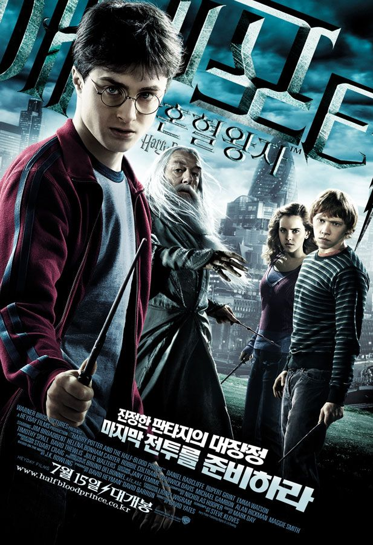
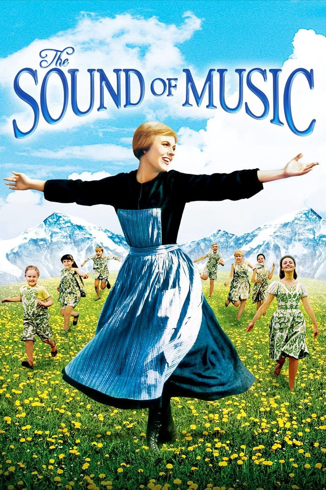

인생 영화 BEST5
| 순위 | 제목 | 포스터 | 줄거리 | 바로가기 |
|---|---|---|---|---|
| 1 | 올드가드 | 오랜 시간을 거치며 세상의 어둠과 맞서운 불멸의 존재들이 세계를 수호하기 위해 또다시 힘을 합쳐 위기와 싸워나가는 이야기 | 클릭 | |
| 2 | 크루엘라 |  |
처음부터 난 알았어. 내가 특별하단 걸 그게 불편한 인간들도 있겠지만 모두의 비위를 맞출 수는 없잖아? | 클릭 |
| 3 | 해리포터 : 혼혈왕자 |  | 어둠의 세력이 더욱 강력해져 머글 세계와 호그와트까지 위협해온다. 남겨진 결전을 위한 최후의 미션, 볼드모트와 해리 포터에 얽힌 치명적인 비밀, 선택된 자만이 통과할 수 있는 대단원을 향한 본격적인 대결이 시작된다! |
클릭 |
| 4 | 라이온킹 | 어린 사자 ‘심바’는 프라이드 랜드의 왕인 아버지 ‘무파사’를 야심과 욕망이 가득한 삼촌 ‘스카’의 음모로 잃고 왕국에서도 쫓겨난다. 기억해라! 네가 누군지. 아버지의 죽음에 대한 죄책감에 시달리던 ‘심바’는 의욕 충만한 친구들 ‘품바’와 ‘티몬’의 도움으로 희망을 되찾는다. |
클릭 | |
| 5 | 사운드 오브 뮤직 |  | 음악을 사랑하는 말괄량이 견습 수녀 ‘마리아’는 원장 수녀의 권유로 해군 명문 집안 폰 트랩가의 가정교사가 된다. ‘마리아’는 좀처럼 마음의 문을 열지 않는 폰 트랩가의 일곱 아이들에게 노래를 가르치며 점차 교감하게 되고, 엄격한 ‘폰 트랩 대령’ 역시 마음의 문을 열게 된다. 그러던 어느 날, ‘마리아’는 자신이 ‘폰 트랩 대령’을 사랑하고 있다는 사실을 깨닫게 되고, 그 비밀을 간직한 채 아이들을 떠나 다시 수녀원에 들어가기로 결심하는데… |
클릭 |